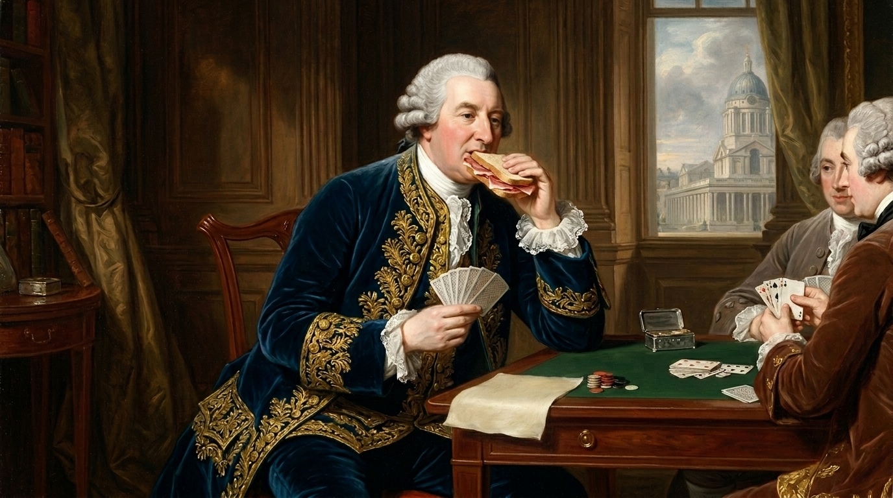
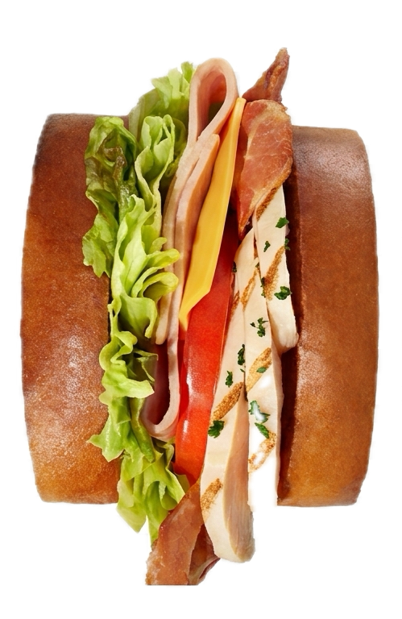
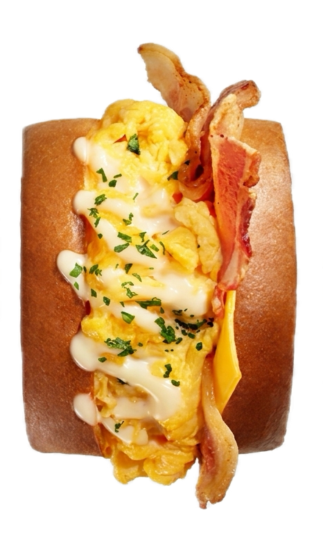
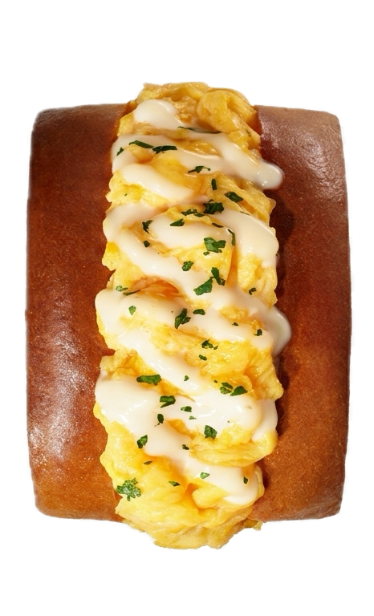

점점 뚱뚱해지는 샌드위치에 관한 이야기


이렇게 생긴 뚱뚱한 샌드위치는 우리에게 이미 익숙해진 존재이기도 하다.

"이건... 샌드가 아니라..."

"하마가 될 수 있는 새로운 도구!?"

지금과는 조금 달랐다.
18세기 영국에서 탄생한 샌드위치는 빠르게 식사를 해결하기 위한 음식이었다.
18세기 영국, 한 백작이 카드놀이를 하다가 식사 시간을 아끼기 위해 빵과 빵 사이에 고기를 끼워 먹기 시작했다.
그것이 바로 샌드위치의 시작이었다.

한 손으로 먹을 수 있었고,
자리를 비우지 않고 먹을 수 있었고,
빵이 손을 더럽히지 않게 막아주었으며,
무엇보다도 빠르게 먹을 수 있었다.
그리고 이 간편한 음식은 바다를 건너 우리나라에도 도착하게 되었다.
길거리 토스트는 네모난 식빵 두 장, 그 사이엔 계란, 양배추, 햄, 그리고 설탕 한 줌으로 사람들의 허기를 채워 주었다. 케첩과 설탕이 더해진 손가락 두세 마디 정도 높이의 투박한 단면은 한 손으로 쥐고 한 입에 베어 물기 딱 좋은 두께였다.
여전히 가성비 있고 간단한 것이 샌드의 전부였던 시절이었다.
그 시발점에는 2010년대 즈음 초신성처럼 등장한 어느 컨텐츠가 있다.
화면 속에서 사람들은 엄청난 양의 음식을 먹기 시작했다. 보는 사람도, 먹는 사람도 비주얼에 더 집중하게 되었다. 이때부터 였을까? 샌드는 반으로 잘리고 예쁘게 쌓여 비주얼로 승부를 보기 시작했다.

치킨 클럽 샌드위치

베이컨 더블 치즈 샌드위치

에그 샌드위치
SNS가 일상이 된 시대에, 음식은 먹기 전에 먼저 사진이 된다. 사진을 올리기 좋은 음식, 잘라봤을 때 예쁘고 단면이 화려한 음식이 유명세를 타며 어느새 이런 형태는 거대한 유행이 되었다.
일본에서 시작된 후르츠 산도는 그 변화를 가장 잘 보여준다. 잘린 단면의 과일 배열, 꽉 찬 생크림을 한 샌드는 한 입 크기보다 한 컷 크기가 더 중요해졌다.

가장 최근의 진화 형태는 샌드베이글이다. 과일 산도의 업그레이드 버전이라고 할 수 있다. 두꺼운 베이글을 가르면 크림과 화려한 단면을 위한 재료들이 박혀 있다.
샌드의 변화는 단순한 음식 트렌드를 넘어서
그 안에시대의 취향이 고스란히 담겨 있다.
편리함을 원하던 시작부터,
가성비 있는 배부름을 원했던 시기를 지나
그리고 보여주기를 원하는 지금에 이르기까지...